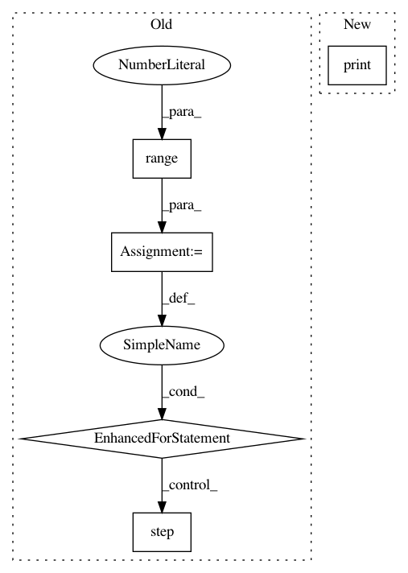

630a2c960116050b274bd69c46e58e1b000c949d,train.py,,,#,21
Before Change
for idx, data in enumerate(dataloader):
for jj in range(400):
optimizer.zero_grad()
classification, regression, anchors, transformed_anchors = model(data["img"].cuda().float())
if data["annot"][0, 0, 4] == -1:
continue
loss = total_loss(classification, regression, anchors, data["annot"].cuda().float())
loss.backward()
optimizer.step()
print(idx, loss)
break
for i in range(100):
After Change
idxs = np.where(classification>0.5)
img = np.transpose(np.array(data["img"])[0, :, :, :], (1,2,0)).astype(np.uint8)
print(idxs[0].shape[0])
for j in range(idxs[0].shape[0]):
bbox = transformed_anchors[0, idxs[1][j], :]
x1 = int(bbox[0])
y1 = int(bbox[1])
In pattern: SUPERPATTERN
Frequency: 3
Non-data size: 5
Instances
Project Name: yhenon/pytorch-retinanet
Commit Name: 630a2c960116050b274bd69c46e58e1b000c949d
Time: 2018-04-26
Author: yannhenon@gmail.com
File Name: train.py
Class Name:
Method Name:
Project Name: flow-project/flow
Commit Name: 75028b69a20261c44081f807a4a18d6d4bcb2929
Time: 2017-02-21
Author: dicksteinleah@gmail.com
File Name: cistar-dev/build-tester.py
Class Name:
Method Name:
Project Name: rusty1s/pytorch_geometric
Commit Name: f6532b3c4c329e6d5d5fb846acc441df47616c4c
Time: 2020-03-22
Author: matthias.fey@tu-dortmund.de
File Name: examples/gnn_explainer.py
Class Name:
Method Name: